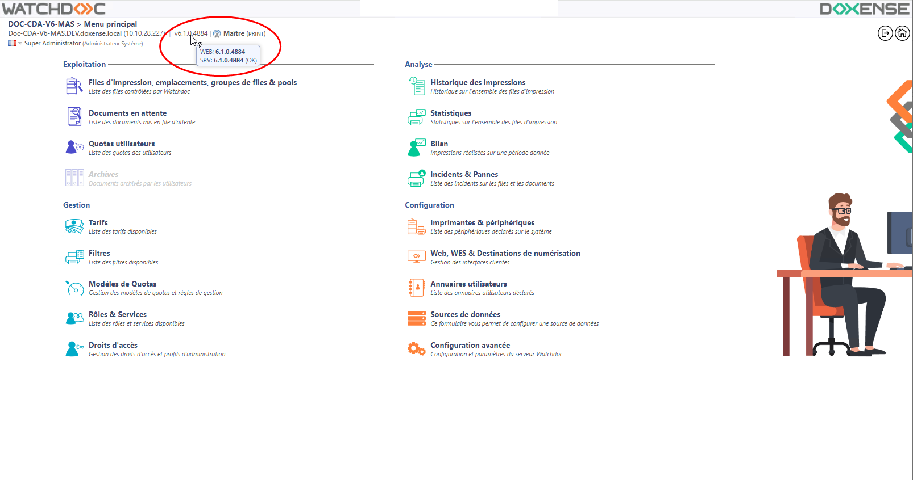
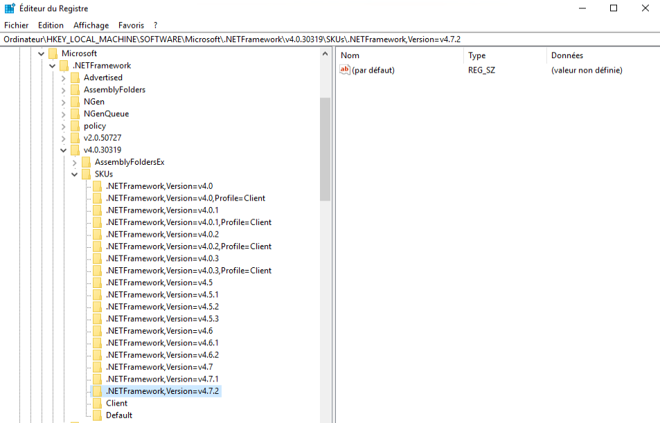
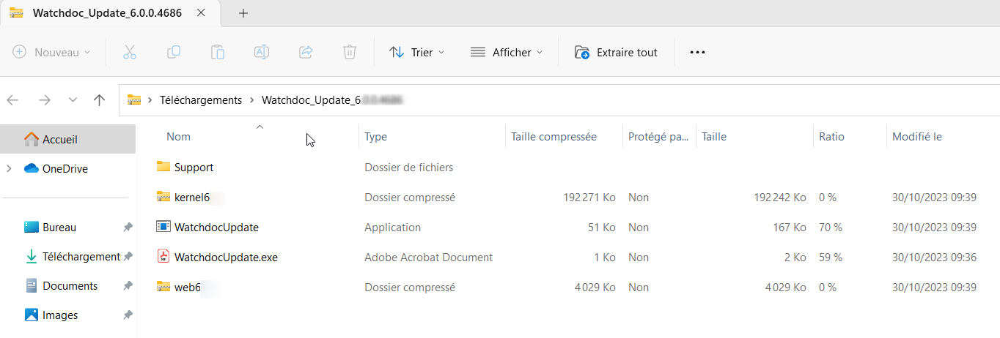

Arrêt de production
La mise à jour nécessite un arrêt de production.
Il convient donc de la programmer à un moment où l'impact sur l'activité d'impression n'est pas trop important (idéalement HNO).
Licence
Pour mettre à jour Watchdoc en version 6.1.x, vous avez besoin d'une nouvelle licence.
C'est aussi le cas si la composition de votre architecture a changé (nouveaux serveurs, nouveaux périphériques d'impression, changement de marque de périphériques, notamment).
Pour connaître la version Watchdoc installée sur votre serveur :
-
connectez-vous en tant qu'administrateur dans l'interface web d'administration de Watchdoc ;
-
depuis le Menu Principal, vérifiez le numéro de version affiché :.

Si nécessaire, consultez la procédure Mettre à jour la clé de licence.
Si nécessaire, téléchargez le formulaire de demande de licence et communiquez-le au Support Doxense via site Connect.
Version de Microsoft® .Net
Le serveur d'impression et le serveur web doivent tous deux être équipés au minimum de la version .net Framework 4.8 de Microsoft (à télécharger ici).
Pour connaître la version du .Net Framework installée sur votre serveur :
-
lancez l'outil de gestion de la base de registre (regedit) ;
-
dans l'éditeur de base de registre (Registry Editor), cliquez sur HKEY_LOCAL_MACHINE\SOFTWARE\Microsoft\.NETFramework ;
-
sélectionnez le dernier dossier préfixé par "v" dans lequel sont enregistrés les dossiers de versions, cliquez sur SKUs et déployez l'arborescence pour connaître la dernière version installée :

Droits
Vérifiez que vous disposez des droits suivants :
-
droits d’administrateur sur les serveurs d’impression et d’application ;
-
droits SQL de modification de la base de données utilisée par Watchdoc ;
-
droits d’accès Watchdoc en mode maintenance afin d’appliquer la nouvelle licence ou la licence de migration.
-
compte de service (dont le mot de passe n'expire jamais) possédant le droit de lecture et d'écriture sur un dossier en partage réseau si vous comptez utiliser la destination ScanToFolder de WEScan.
Antimalware, antivirus et outils de sécurité
Les antimalwares, antivirus et autres outils garantissant la sécurité du serveur d'impression (Windows® Defender, Bit Defender®, Kaspersky®, MacAfee®, par exemple), doivent être désactivés sur le dossier d'installation de Watchdoc ainsi que sur le dossier contenant les spools. Cette désactivation repose sur des règles d'exclusion pour que l'activité d'impression de Watchdoc ne soit pas ralentie par l'analyse effectuée par ces outils.
Base de données SQL et migration des données
Le schéma de la base de données de Watchdoc a été modifié :
-
en v. 5.4
-
en v. 6.0
Pour les versions 5.4 et 5.5, une mise à jour de la base de données puis une migration des données sont nécessaires (vers la v. 6.0).
Pour les versions antérieures à la v. 5.4, deux mises à jour de la base de données puis deux migrations des données sont nécessaires (vers la 5.4 puis vers la 6.0).
Vérifiez que vous disposez :
-
d'un droit d'accès à la base de données SQL de Watchdoc ;
-
d'un logiciel de gestion de la base de données (Microsoft SQL Server Management Studio pour MS SQL®, par exemple).
Configuration en Domaine (master/slaves)
Lorsque Watchdoc est en domaine, une mise à jour des autres serveurs (slaves) est nécessaire après la mise à jour du serveur master.
Mode déporté
Lorsque Wathdoc est installé en mode déporté (serveurs Watchdoc et IIS déployés sur des serveurs différents, architecture non-recommandée), il est nécessaire de conserver une ancienne version du site web IIS jusqu'à la fin de la mise à jour.
Cette sauvegarde peut également être conservée en vue de restaurer la précédente version.
{kind=link}
Réinstallation des pilotes
Pour les versions antérieures à la v. 6.1, la désinstallation puis la réinstallation des pilotes à l'aide de l'outil DriverPackageExtractor est nécessaire.
Préparer la mise à jour
-
Téléchargez le package d'installation de la nouvelle version depuis la page dédiée.
-
Connecté en tant qu'administrateur sur le serveur d'impression Watchdoc, créez un dossier temporaire (C:\TEMPWD).
-
Copiez l'archive Watchdoc_Update_[Nouvelle_Version].zip dans le dossier C:\TEMPWD et décompressez-la dans ce dossier (clic droit > extraire tout).
-
Vérifiez le contenu du dossier décompressé :
-
KernelXX.zip : contient les nouveaux fichiers pour le service Watchdoc ;
-
WatchdocUpdate.exe : exécutable pour la mise à jour ;
-
WatchdocUpdate.exe.config : fichier contenant le fichier de configuration de l'exécutable ;
-
WebXX.zip : contient les nouveaux fichiers pour le site web Watchdoc :

-
-
Si vous utilisez WEScan et avez personnalisé les profils de scan directement dans le dossier des profils par défaut (fichiers JSON), faites-en une sauvegarde que vous pourrez rétablir après la mise à jour.Ce dossier est en effet écrasé au cours de la mise à jour. Pour information, il est recommandé de créer un dossier spécifique pour les profils personnalisés (cf. Utiliser ScanProfilesCustomizer).